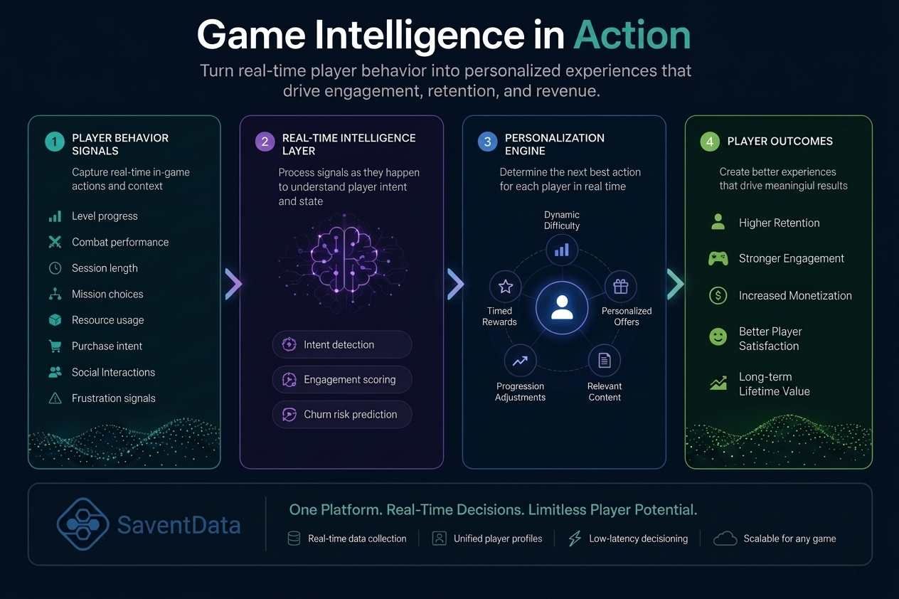

Modern live-service games are among the most data-rich systems ever built. Every second of gameplay produces signals about player intent, skill, frustration, engagement, and monetization readiness.
Yet despite this abundance of data, most studios still struggle to turn it into meaningful, real-time decisions inside the game itself.
The Three Layers of the Problem
Game studios typically operate across three disconnected layers of intelligence:
- Layer 1 — Data Exists: telemetry, events, sessions, and gameplay logs are fully captured
- Layer 2 — Insights Are Delayed: dashboards and reports explain behavior after it happens
- Layer 3 — No Real-Time Action: gameplay systems rarely adapt dynamically to player intent
This structure creates a critical gap between what players are doing and how the game responds.
What Players Are Already Telling You
Players constantly express intent through behavior — often without saying a word.
A drop in session frequency, repeated failure in a level, sudden matchmaking frustration, or reduced engagement with core mechanics all indicate evolving sentiment.
At the same time, accelerated progression, repeated item interactions, or increased session depth can signal high-value monetization or retention opportunities.
These signals already exist inside your game. The question is whether they are being used fast enough to change outcomes.
Why Traditional Game Analytics Breaks at Scale
As games scale, so does complexity. Millions of players generate millions of behavioral permutations, making it impossible for manual analysis or static dashboards to keep up.
Most analytics systems are optimized for retrospective understanding, not real-time intervention.
This leads to predictable failure patterns:
- Churn is detected after players have already left
- Monetization insights arrive after purchase intent fades
- Balancing issues are fixed after community frustration grows
- Live-ops decisions rely on intuition instead of signals
From Passive Analytics to Active Gameplay Intelligence
The next evolution of game analytics is not more dashboards — it is systems that actively participate in shaping gameplay.
This means continuously interpreting behavioral signals and triggering responses inside the game in real time.
What Real-Time Game Intelligence Enables
When gameplay data becomes operational, studios unlock entirely new capabilities:
- Dynamic difficulty adjustment based on frustration signals
- Personalized progression paths for different player archetypes
- Real-time churn prevention interventions
- Context-aware live-ops events
- Predictive matchmaking and balancing optimization
Instead of reacting to player behavior, the game begins to respond to it as it happens.

The Competitive Edge Is Closing the Loop
The most successful live-service games will not be those with the most content or the most players.
They will be the ones that close the loop between player behavior and game response faster than anyone else.
That is where SaventData helps studios evolve — turning fragmented gameplay signals into real-time intelligence that improves retention, engagement, and monetization inside the live game environment.
See Your Game the Way Your Players Experience It
Discover how SaventData transforms raw gameplay data into real-time decisions that shape player experience.
Visit SaventData